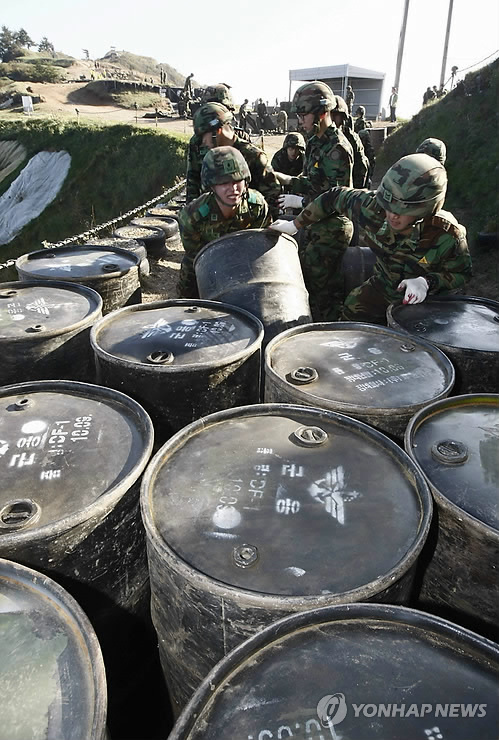
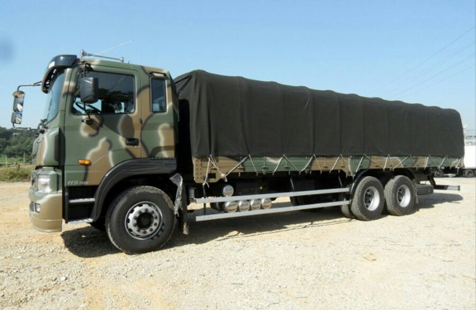
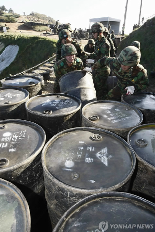
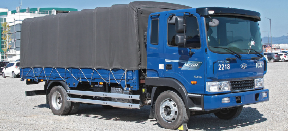
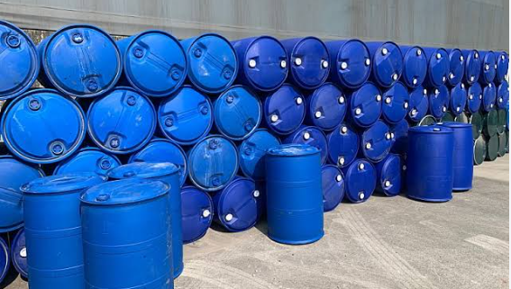
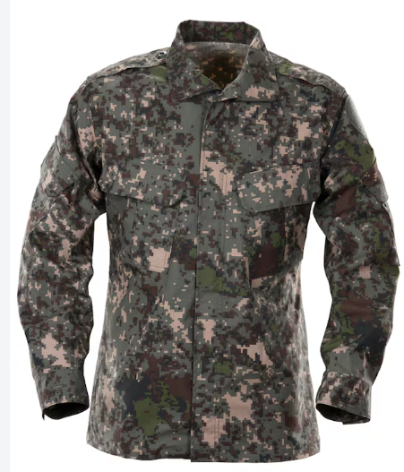
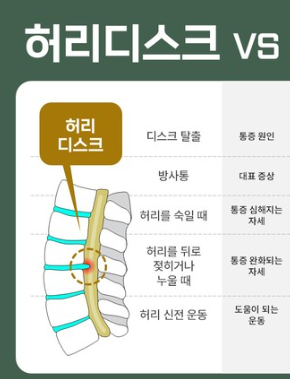

보급 수송대대 유류 관리(3종 보급)임
꽉 찬 드럼통의 무게가 150~200kg라고 함
직접 일한건 아닌데 본 경험에 의해 적겠음

훈련을 나가면 빈 드럼 통, 꽉 찬 드럼통
적절하게 섞어서 9톤 트럭에 실어서 훈련 감

짤에서 보면 사람이 직접 옮기는데
군대는 기계보다 사람이 싼 지라
사람이 꽉 찬 드럼통도 직접 옮김
옮기는 방법은 왼쪽 잡고 오른쪽 당기고
반대로 계속하면 트럭 앞에까지 감

힘으로 트럭 앞에까지 옮김
밑에서 2명이 잡고 트럭 위에서 2명이 잡고
밑에서는 올리고 위에서는 잡아 당기면서
트럭에 적재를 함
훈련을 보통 이렇게 하고...

훈련 안하면 드럼통 정리, 적재 함
부대 특성 상 드럼통 놔둘 자리도 없고 그러다보니
저렇게 3~4단으로 빈 드럼통을 적재함

오래쓰다보니 적재하는 과정에서
옷에 기름, 녹슨 거 묻는 경우가 많음
기름은 지워도 안 지워지고
개붕이는 폐품 창고병이였는데
3종 쪽에서 전투복 달라는 요청 많이 받았음

또 다른 단점으로는 드럼통이라는게 무겁고
보직 특성상 대학 전공이 화학, 기계 계열이 많았는데
일말 상초에 디스크 터짐
내가 있던 부대 3종 보급 중에서
디스크 터진 사람 4명 봄
3종 쪽에 마른 사람, 멸치 체형이 신병으로 오면
다들 좆됐네하는 표정이긴 했음
3종 쪽에 키 165 몸무게 58~60인
신병이 왔는데 담당관이 우리는 왜 멸치만 오냐고
빡쳐하는거 봄
병장까지 3종에서 일하던 동기 있는데
근육질 체형이였음
요약
1. 군대 3종 보급으로 가면 좆된 거
2. 디스크 대부분 터짐
3. 3종은 빡세다
유류관리병 자체가 의외로 귀한 특기병이라서..보통 편제 자체가 없거나 해가지고 보급병한테 짬때리는 경우가 많은데
재밌는 건 유류관리병한테는 그 명목으로 예산이 지정돼서 전용 안전장갑이 나오지만, 짬맞은 애들한테는 안 나옴